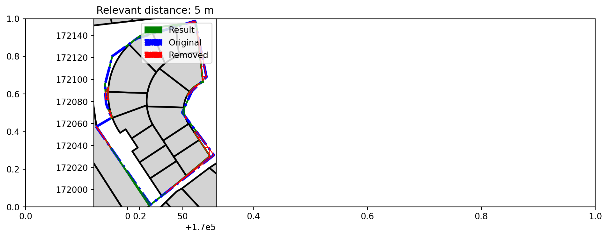

from brdr.aligner import Aligner
from brdr.be.grb.enums import GRBType
from brdr.be.grb.loader import GRBActualLoader
from brdr.enums import AlignerResultType
from brdr.loader import GeoJsonLoader
from brdr.viz import print_observation_of_aligner_results, show_map
if __name__ == "__main__":
"""Example: load thematic GeoJSON and align it to GRB reference data."""
aligner = Aligner()
# Thematic input geometry.
thematic_json = {
"type": "FeatureCollection",
"name": "test",
"crs": {"type": "name", "properties": {"name": "urn:ogc:def:crs:EPSG::31370"}},
"features": [
{
"type": "Feature",
"properties": {"fid": 1100, "id": 1100, "theme_identifier": "1100"},
"geometry": {
"type": "MultiPolygon",
"coordinates": [
[
[
[170020.885142877610633, 171986.324472956912359],
[170078.339491307124263, 172031.344329243671382],
[170049.567976467020344, 172070.009247593494365],
[170058.413533725659363, 172089.43287940043956],
[170071.570170061604585, 172102.403589786874363],
[170061.212614970601862, 172153.235667688539252],
[170008.670597244432429, 172137.344562214449979],
[169986.296310421457747, 172121.231194059771951],
[169979.658902874827618, 172095.676061166130239],
[169980.509304589155363, 172078.495172578957863],
[169985.424311356124235, 172065.162689057324314],
[169971.609697333740769, 172057.093288242496783],
[170020.885142877610633, 171986.324472956912359],
]
]
],
},
}
],
}
aligner.load_thematic_data(
GeoJsonLoader(_input=thematic_json, id_property="theme_identifier")
)
aligner.load_reference_data(
GRBActualLoader(grb_type=GRBType.ADP, partition=1000, aligner=aligner)
)
relevant_distance = 5
aligner_result = aligner.process(relevant_distances=[relevant_distance])
aligner_result.save_results(path="output/", aligner=aligner)
thematic_geometries = {
key: feat.geometry for key, feat in aligner.thematic_data.features.items()
}
reference_geometries = {
key: feat.geometry for key, feat in aligner.reference_data.features.items()
}
show_map(aligner_result.results, thematic_geometries, reference_geometries)
print_observation_of_aligner_results(aligner_result.results, aligner)
geojson_results = aligner_result.get_results_as_geojson(
result_type=AlignerResultType.PROCESSRESULTS, aligner=aligner
)
print(geojson_results["result"])
-------- Observation for ID 1100 with relevant distance 5 --------------
{'alignment_date': '2026-03-27',
'area': 10805.47,
'brdr_version': '0.15.6',
'full': True,
'last_version_date': '2025-06-21',
'reference_features': {'24040C0160/00A000': {'area': 511.19,
'full': True,
'percentage': 100,
'version_date': '2025-06-21'},
'24040C0160/00B000': {'area': 558.47,
'full': True,
'percentage': 100,
'version_date': '2022-06-25'},
'24040C0160/00C000': {'area': 597.63,
'full': True,
'percentage': 100,
'version_date': '2022-06-25'},
'24040C0160/00F000': {'area': 602.28,
'full': True,
'percentage': 100,
'version_date': '2022-06-25'},
'24040C0160/00G000': {'area': 916.32,
'full': True,
'percentage': 100,
'version_date': '2022-06-25'},
'24040C0160/00H000': {'area': 855.33,
'full': True,
'percentage': 100,
'version_date': '2022-06-25'},
'24040C0160/00M000': {'area': 1233.7,
'full': True,
'percentage': 100,
'version_date': '2022-06-25'},
'24040C0161/00C000': {'area': 608.85,
'full': True,
'percentage': 100,
'version_date': '2022-06-25'},
'24040C0161/00D000': {'area': 570.82,
'full': True,
'percentage': 100,
'version_date': '2025-06-21'},
'24040C0161/00E000': {'area': 501.67,
'full': True,
'percentage': 100,
'version_date': '2022-06-25'},
'24040C0161/00F000': {'area': 504.39,
'full': True,
'percentage': 100,
'version_date': '2022-06-25'},
'24040C0161/00G000': {'area': 527.93,
'full': True,
'percentage': 100,
'version_date': '2022-06-25'},
'24040C0161/00H000': {'area': 484.52,
'full': True,
'percentage': 100,
'version_date': '2022-06-25'},
'24040C0161/00K000': {'area': 753.61,
'full': True,
'percentage': 100,
'version_date': '2025-06-21'}},
'reference_od': {'area': 1578.74},
'reference_source': {'source': 'GRB - ADP - administratief perceel',
'source_url': 'https://geo.api.vlaanderen.be/GRB/ogc/features/collections/ADP',
'version_date': '2026-03-27'}}
{"crs": {"properties": {"name": "http://www.opengis.net/def/crs/EPSG/0/31370"}, "type": "name"}, "features": [{"geometry": {"coordinates": [[[169979.658903, 172095.676061], [169980.710261, 172099.723965], [169986.29631, 172121.231194], [169987.405852, 172122.030257], [169987.654753, 172122.209508], [169995.140711, 172127.600697], [169997.740343, 172129.472883], [170003.980622, 172133.966966], [170004.159257, 172134.124346], [170004.975449, 172134.819066], [170005.803417, 172135.499578], [170006.642777, 172136.165946], [170007.493593, 172136.81785], [170008.355225, 172137.455098], [170009.227737, 172138.077498], [170010.110681, 172138.684986], [170011.003929, 172139.277178], [170011.907225, 172139.854074], [170012.820185, 172140.415482], [170013.742681, 172140.961146], [170014.674201, 172141.490938], [170015.614809, 172142.00473], [170016.564057, 172142.502458], [170017.521625, 172142.983802], [170018.487257, 172143.448826], [170019.460697, 172143.89721], [170020.441689, 172144.328826], [170021.429913, 172144.743674], [170021.665305, 172144.839674], [170022.425049, 172145.141562], [170023.426841, 172145.522362], [170024.435033, 172145.88601], [170025.449305, 172146.232314], [170026.469337, 172146.561338], [170027.494809, 172146.872762], [170028.525401, 172147.166778], [170029.560921, 172147.442938], [170030.601113, 172147.701434], [170031.645529, 172147.942202], [170032.693849, 172148.164986], [170033.745881, 172148.36985], [170034.801177, 172148.556666], [170034.910297, 172148.574906], [170035.859481, 172148.725434], [170036.920601, 172148.87609], [170037.984153, 172149.00857], [170043.537103, 172149.652216], [170043.593807, 172149.658808], [170046.527833, 172149.998906], [170050.676313, 172150.479802], [170051.931801, 172150.625338], [170056.436377, 172151.147514], [170059.474137, 172151.499642], [170062.124633, 172151.806906], [170062.174809, 172151.373882], [170065.252121, 172124.825914], [170068.410457, 172097.578682], [170067.538649, 172097.28089], [170066.678297, 172096.95129], [170065.830617, 172096.590202], [170064.996889, 172096.198074], [170064.178137, 172095.775482], [170063.375577, 172095.323066], [170062.590233, 172094.841338], [170061.823193, 172094.331002], [170061.075417, 172093.792698], [170060.347929, 172093.227322], [170059.641881, 172092.63545], [170058.957977, 172092.017978], [170058.297433, 172091.375738], [170057.660953, 172090.709626], [170057.049433, 172090.020474], [170056.463769, 172089.309242], [170056.238745, 172089.021178], [170055.904665, 172088.57689], [170055.373017, 172087.82457], [170054.869273, 172087.052986], [170054.394393, 172086.263482], [170053.991889, 172085.534649], [170057.77276, 172088.025828], [170051.059918, 172073.285347], [170051.062809, 172073.031034], [170051.107225, 172072.110714], [170051.185433, 172071.192698], [170051.297497, 172070.278138], [170051.443225, 172069.368442], [170051.622169, 172068.464698], [170051.834457, 172067.568186], [170051.837908, 172067.555659], [170052.079705, 172066.680058], [170052.090002, 172066.647568], [170052.357401, 172065.80153], [170052.447832, 172065.548413], [170052.587481, 172065.15737], [170052.667289, 172064.933882], [170052.982175, 172064.145102], [170053.619267, 172064.564877], [170062.406009, 172052.756715], [170060.701593, 172051.6337], [170065.003097, 172045.105274], [170074.638617, 172030.48153], [170053.262233, 172012.638842], [170034.976463, 171997.375893], [170034.98072, 171997.369431], [170034.784783, 171997.215899], [170031.113305, 171994.151353], [170031.031758, 171994.275119], [170023.872437, 171988.665245], [170022.443652, 171987.545683], [170020.885143, 171986.324473], [170019.757098, 171985.440564], [169993.376921, 172025.24441], [169985.297957, 172037.43437], [169980.829273, 172044.176954], [169972.970073, 172056.035322], [169971.956633, 172056.902266], [169971.904954, 172057.265754], [169972.084925, 172057.370879], [169984.101267, 172064.389872], [169985.424311, 172065.162689], [169986.132019, 172065.576075], [169986.17128, 172065.599009], [169986.081113, 172065.849722], [169985.732889, 172066.863354], [169985.402137, 172067.88281], [169985.088729, 172068.90777], [169984.792985, 172069.937786], [169984.514905, 172070.972922], [169984.367507, 172071.561499], [169983.05063, 172071.601555], [169980.509305, 172078.495173], [169980.351255, 172081.688284], [169982.713007, 172081.616446], [169982.639961, 172082.594682], [169982.578521, 172083.664698], [169982.535321, 172084.73561], [169982.510489, 172085.80697], [169982.538393, 172088.811194], [169982.545881, 172089.021818], [169982.594201, 172090.09241], [169982.660889, 172091.162106], [169982.745945, 172092.230522], [169982.846381, 172093.269665], [169980.029234, 172088.194157], [169979.658903, 172095.676061]]], "type": "Polygon"}, "id": "1100", "properties": {"brdr_area": 10805.468087706427, "brdr_diff_area_index": 95.8, "brdr_diff_area_index_perc": 0.9, "brdr_diff_length_index": 21.2, "brdr_diff_length_index_perc": 4.7, "brdr_id": "1100", "brdr_nr_calculations": 1, "brdr_perimeter": 476.58359976307725, "brdr_relevant_distance": 5, "brdr_remark": [], "brdr_shape_index": 0.5978266380626178, "brdr_sym_diff_area_index": 425.8, "brdr_sym_diff_area_index_perc": 3.9}, "type": "Feature"}], "type": "FeatureCollection"}